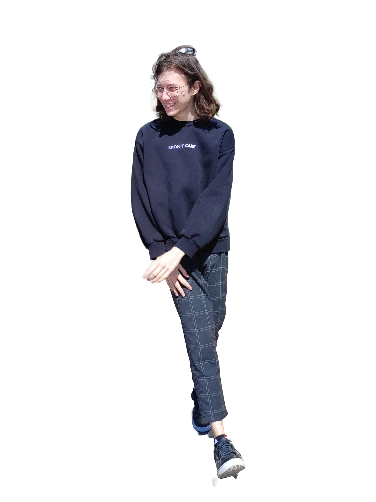

Technical skills
- C# - my main and favourite language, high level
- Blazor - middle level
- Unity - low level
- Python - second favourite language, high level
- Java - middle level
- C, C++ - low level
- HTML, CSS, JS - low level. Currently in the process of studying and improving
Soft skills
- Team Collaboration
- Friendliness
- Time Management
- Problem Solving
- Critical Thinking
Language skills
- Russian - native
- English - not less than B2 with a SELT certificate
More than work
I have a vibrant and multifaceted array of interests that keep my life both active and engaging. I have a passion for badminton and cycling, which not only keep me physically fit but also provide me with a great way to enjoy the outdoors and unwind.
When it comes to computer games, I have a taste for variety and depth. I dive into the complex world of "Crusader Kings 3," manage agricultural empires in "Farming Simulator 22," engage in epic space battles in "Destiny 2," explore the expansive universe of "Genshin Impact," construct and survive in "Minecraft," and design intricate cities in both parts of "Cities: Skylines." These games offer me endless hours of strategy, creativity, and adventure.
My intellectual side is equally impressive, with a love for reading that has led me to admire the works of Albert Camus. His profound explorations of existential themes resonate deeply with me, adding a thoughtful dimension to my literary pursuits.
In addition to reading, I sometimes immerse myself in the colorful and diverse world of anime. Series like "Banana Fish," "KonoSuba: God's Blessing on This Wonderful World!," "Spy x Family," and "Kamisama Kiss" provide me with a mix of thrilling stories, humor, and heartwarming moments.
My love for visual storytelling extends to films as well, where I enjoy watching a wide range of genres and styles, further enriching my appreciation for different forms of narrative art.